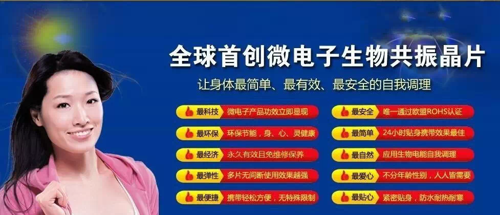

長生量子科技
全球首创微电子生物共振晶片

1 微量子生物波健康晶片
)
最新高科技产品，微电子生物量子晶片，真正的自然疗法，没有任何的副作用．为广大的白领女性调理改善的痛经问题，为男性前列腺炎患者改善修复尿频，尿等待，夜尿多等疾病。同样对肩周炎患者也有很好疗效．如果你是微电子生物量子晶片使用者，请把这个产品介绍给你身边的家人或者朋友，让更多的人了解并使用它。如果你还没有使用过生物量子晶片，也请你一定要使用一下．相信只要拥有微电子生物量子晶片，可以说向亚健康说拜拜了．平时上班再也不会觉得头晕，乏力．戴上微电子生物量子晶片可以让我们每天充满活力．生活的更有质量，更加的健康！
微电子生物量子晶片对老年人常患的骨刺，前列腺炎，肩周炎，青春期女孩的痛经，宫寒等，紫癫性白血病，心肌缺血等配合相应的穴位都有显著的疗效。
“能量医学”是一种无药求本的实用医学，它主要运用宇宙、自然、人体能量，并将它们有机的结合在一起，利用自然宇宙的能量来调理人体之能量，从而达到“天人合一”，人与自然和谐相处的健康状态。
宇宙在形成过程中，原本就存在着一种能量，称之为“宇宙能量”这种能量无处不在，无时不有，光能、声能、热能、磁能、生物电能、机械能这六种能量。就是自然界中能量的表现形式。人是自然进化的产物，正是因为这种能量生命才得以生生不息。
微电子生物量子晶片来自台湾的首创＂微电子＂IC健身片
微电子生物量子晶片：根据医学报告能促进睡眠、燃烧卡路里、强化心脏、活化细胞、排除毒素、增强体能、强化免疫系统工程、减少自由基、舒缓神经系统、减轻焦虑、提高记忆力、减轻炎症、降低血压、增强血清素水准、消除肿胀、促进新陈代谢。
2 微量子生物波健康晶片
.png)
.png)
最科技：微电子产品功效立即显现
最安全：唯一通过欧盟ROHS认证
最环保：环保节能，身、心、灵健康
最简单：24小时贴身携带，效果最佳
最经济：持续20年功效，且免维护保养
最自然：应用自然生物电能自我调理
最弹性：多片无间断使用，效果越强
最爱心：无分年龄性别、人人皆需要
最轻巧：长20㎜宽40㎜厚0.9㎜，重0.5g
最互助：亲友间的晶片可相互支援
最便捷：携带轻鬆方便，无特殊限制
最贴心：紧密贴身，防水耐热耐寒
3 微循环导致的疾病
.png)
.png)
.png)
4 适用人群有哪些？
.png)
.png)
5 案例介绍
.png)
6 产品相关资质证件
.png)
.png)
.png)
.png)
7 产品样品
.png)
8 常见问题集
.png)
1 什么是微电子生物量子晶片？
微电子生物量子晶片是一个方便，高科技产品，只需放在靠近你的身体2.5公分距离内；放入你的口袋裡，还是将这个神奇的小精灵贴你的腰带上，它就能让你体力增强，完成最佳的演出。
- 微电子生物量子晶片可以帮助人类净化，恢复活力，增强抵抗力。
- 微电子生物量子晶片可以防止静电。
- 微电子生物量子晶片可以一天24小时使用。
- 微电子生物量子晶片不是一个医疗产品。
2 微电子生物量子晶片如何工作的？
人体生物电的产生是使我们的细胞用于交流思想，触发肾上腺素，启动肌肉运动，甚至使我们的心脏跳动！不幸的是，由电子发射的杂音对人体生物电场，具有潜在的破坏性，并产生“静电”（正离子），有害我们的身体。小精灵产生的射频（RF），目的是帮助人体筛选出静电，使我们的细胞进行交流，对整个身体有益。
3 什么是微电子生物量子晶片的优点？
当身体达到和谐时，瞬间就可放松，增加循环。经验告诉我们，包括增加力量，改善平衡感，增强灵活性和伸展活动范围。另据报导，循环改善后就可以帮助缓解轻微的关节和肌肉疼痛，改善循环，减轻肿胀，保持灵活，缓解压力，增强耐力，防止静电，减轻晕车。
- 结果可能因人而有所不同。
4 多久才可以感觉到量子生物波健康的效力？
只要您将微电子生物量子晶片放在靠近身体附近2.5公分以内，你会立即感觉到效果！你会发现改善的平衡，增强的力量和增进的灵活性。 整体健康的长期效果，如舒解疼痛，可能需要较长的时间，从一分钟到一整天。
- 结果可能因人而有所不同。
5 微电子生物量子晶片可使用多久？
微电子生物量子晶片的功能，没有时间限制。除非被破坏，小精灵将不会失去他们的应用程式。 微电子生物量子晶片的设计具有绝对的耐久性，能够满足专业运动员要求的生活方式和日常工作的需要，以及人们在一整天的活动，实际上需要的力量。量子生物波健康增加智力，体力，耐力，灵活性和整体表现。当身体最需要时，量子生物波健康能优化健康，不论是身体，精神和智力。
- 结果可能因人而有所不同。
6 微电子生物量子晶片安全吗？
当然！
- 微电子生物量子晶片不是一种药物或类似物质。
- 微电子生物量子晶片不需吞服或被身体吸收。
- 微电子生物量子晶片不排放任何潜在的有害电磁辐射。
- 微电子生物量子晶片不影响到皮肤。
- 微电子生物量子晶片不包含任何限制的物质或金属。
- 微电子生物量子晶片对所有动物都安全。
- 微电子生物量子晶片可以24小时使用。
- 微电子生物量子晶片没有特殊的使用限制。
- 如果您有任何预先存在的条件，请向您的医生请教。